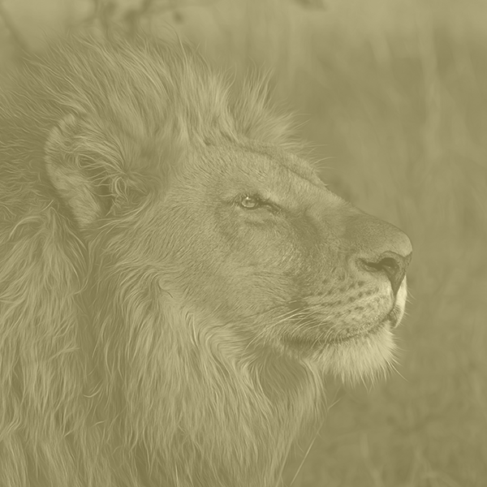

AFFECTING CHANGE IN SIX BIG AREAS
We’re determined to achieve the greatest impact possible through our work, so we’ve set ourselves six ambitious challenges to meet by 2018 – which we’ve named our ‘six big wins’.

1. RESTORING WILDLIFE

4. SUSTAINABLE SEAFOOD & TIMBER TRADE
2. SUSTAING FORESTS AND OCEANS
5. REDUCE CARBON EMISSIONS
3. RIVERS FLOWING

6. LIVING SUSTAINABLY